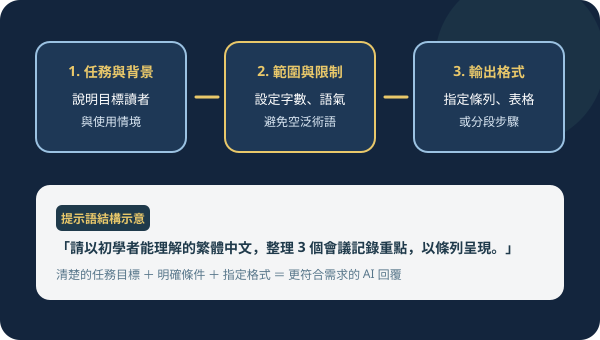

探索實用的數位知識
查看更多從實際應用出發，分享 AI 操作、數位工具與效率工作方法，讓學習逐步轉化為可以使用的成果。
精選教學文章
查看更多從基礎提示語、工具建站實作到日常試算表整理，挑選適合初學者立即上手的實作主題。

讓學習成為創造的起點
我們相信，數位工具的價值不只在於功能，而在於如何協助人們探索、實作與創造。
從實際應用出發，分享 AI 操作、數位工具與效率工作方法，讓學習逐步轉化為可以使用的成果。
從基礎提示語、工具建站實作到日常試算表整理，挑選適合初學者立即上手的實作主題。
我們相信，數位工具的價值不只在於功能，而在於如何協助人們探索、實作與創造。